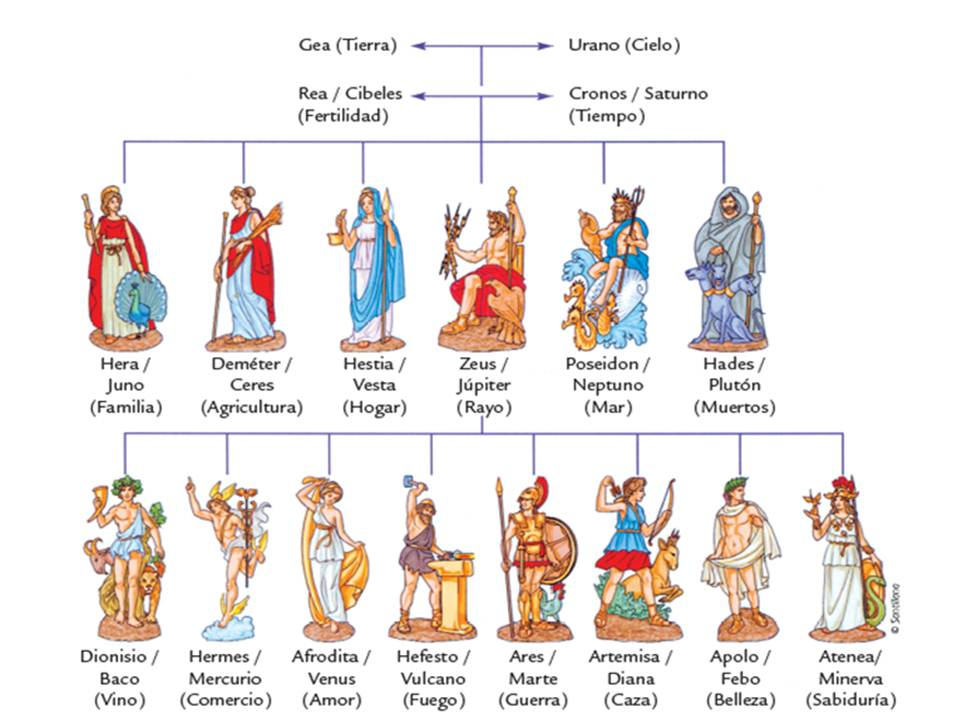
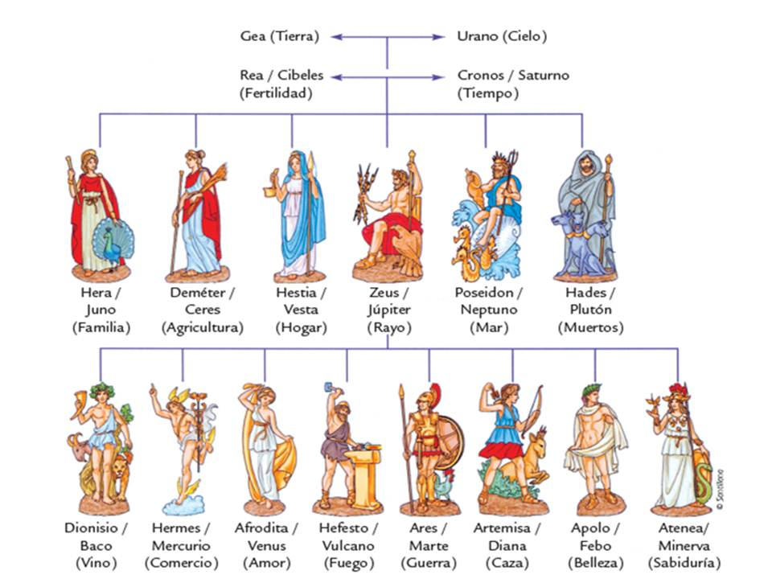

| Inicio | Apolo | Afrodita | Ares | Artemisa | Atenea | Deméter | Dionisio | Hades | Hefesto | Hera | Hermes | Hestia | Poseidón | Zeus |
En la Antigua Grecia, la religión jugaba un papel muy importante, pese a no ser conocido como tal este concepto. Los griegos eran politeístas,
es decir, rendían a culto a más de una divinidad. Había más de un dios y cada uno estaba asociado a diferentes elementos, acciones, poderes, intervenciones, mitos, rituales…etc. Los dioses
olímpicos eran las principales divinidades, aquellas que se encontraban en la cima del Monte Olimpo según la mitología griega.El Concilio de los dioses en el Monte Olimpo estaba formado por
doce dioses. Hay diez que eran siempre olímpicos y la docena era completa por otros dos dioses que podían variar.
En esta página encontrarás mucha información sobre todos los dioses
olímpicos, como su nacimiento y algunos mitos. Puedes usar el menú de arriba para navegar por la página, también puedes seleccionar un dios en esta imágen de abajo o puedes ir al final de la
página para usar un menú más específico. También tienes a tú disposición una página de Galería de imágenes para verlas con más detenimiento, y si te ha gustado nuestra página
puedes probar a realizar nuestro test y adivinar los dioses que hay en las pinturas, ¡Buena suerte!
 
